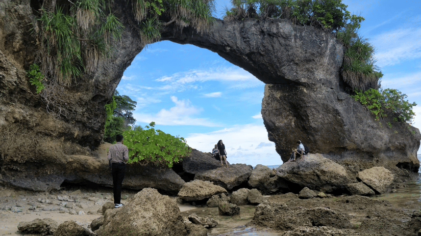
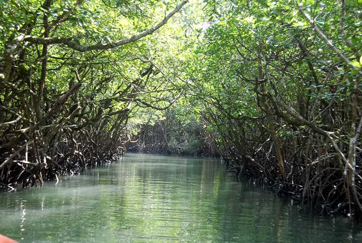
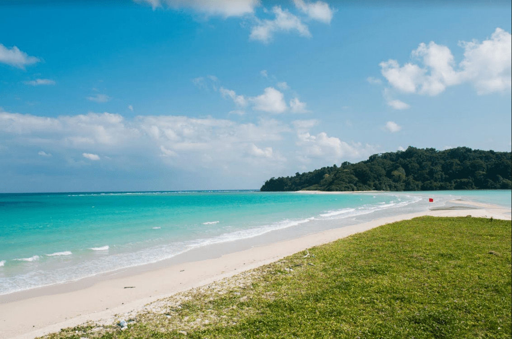
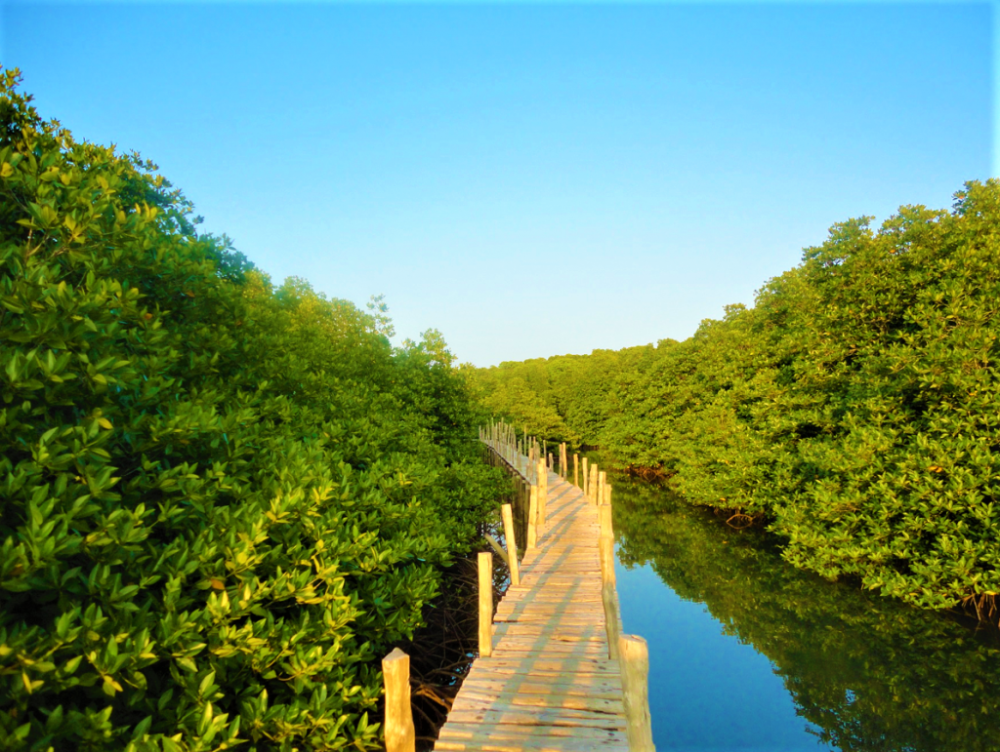
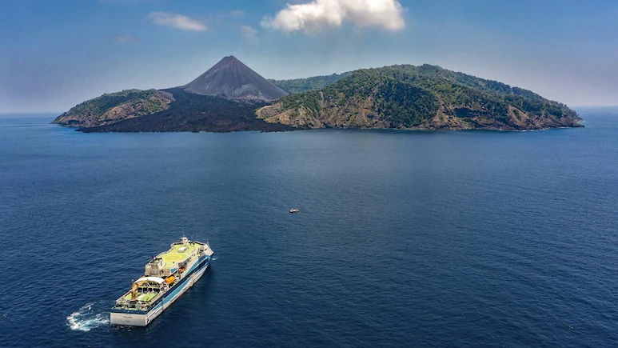

From the harbour town of Port Blair to India's only active volcano on Barren Island — eight destinations, each with its own personality. Most trips combine two or three.

Home to the award-winning Radhanagar Beach, Havelock is the crown jewel of the Andamans — perfect for diving, sunbathing, and romantic escapes.

A tranquil gem with fewer crowds, natural rock formations like the Howrah Bridge, and some of the finest snorkelling spots in the archipelago.

The gateway to the Andamans — explore the historic Cellular Jail, Corbyn's Cove Beach, Ross Island, and the vibrant local markets of Aberdeen Bazaar.

Venture through mangrove creeks to discover limestone caves, mud volcanoes, and the secluded Parrot Island where thousands of parrots roost at dusk.

The northernmost destination — home to Saddle Peak (highest in the Andamans), Ross & Smith twin islands, and pristine turtle-nesting beaches.

An off-the-beaten-path paradise — Amkunj Beach, Cuthbert Bay turtle sanctuary, and dense tropical forests that feel entirely untouched by tourism.

Just a short boat ride from Port Blair, North Bay is the go-to spot for coral viewing, snorkelling, glass-bottom boat rides, and sea walking.

India's only active volcano — a rare geological wonder visible from boat tours. A must-see for nature enthusiasts and photographers.
Tell us your dates and travel style — we'll suggest the right combination of islands for the time you have.
Get a custom suggestion →